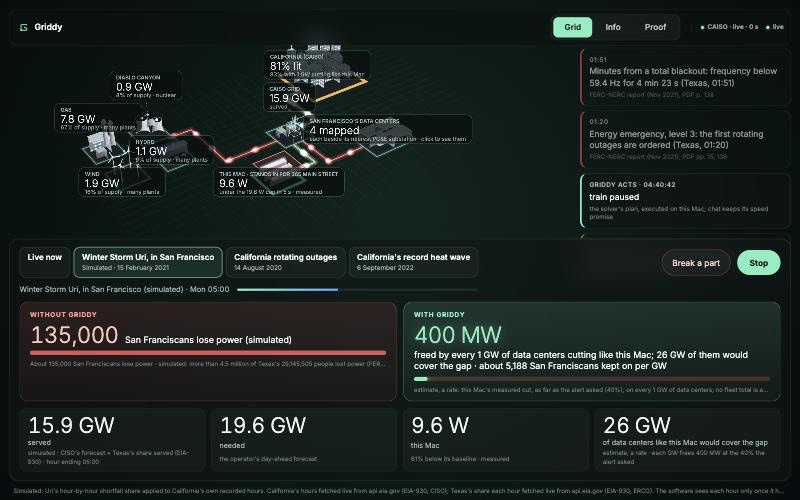
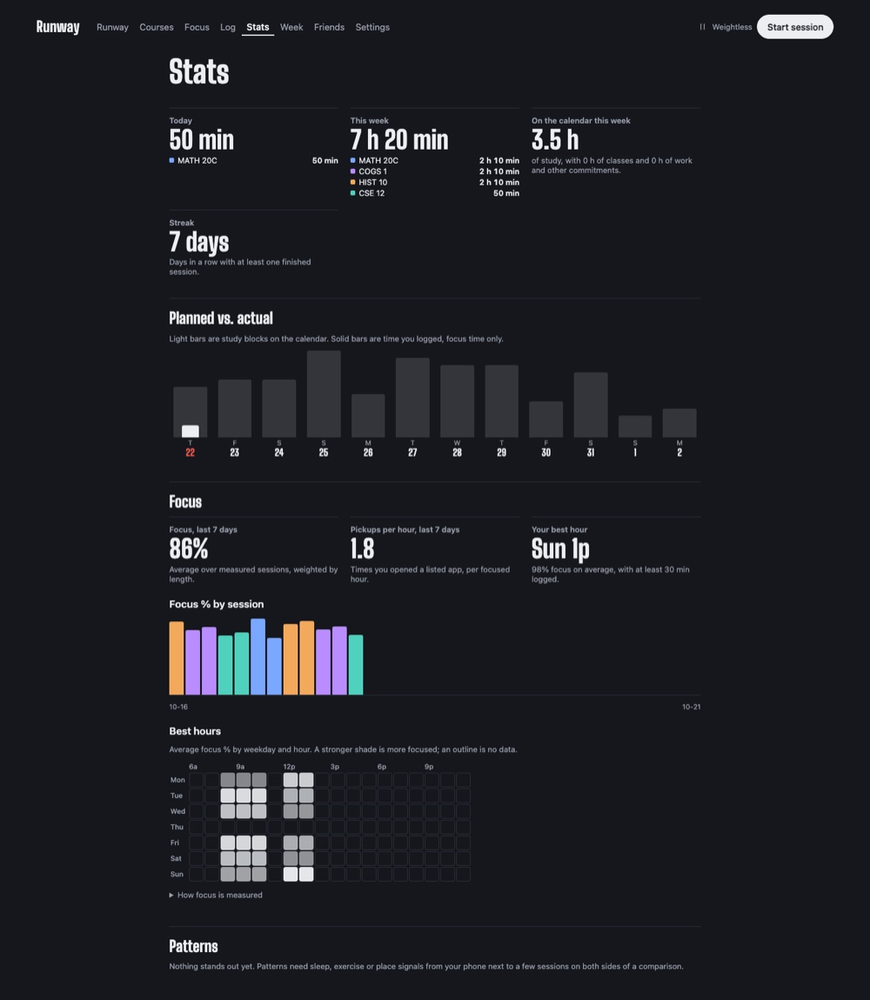
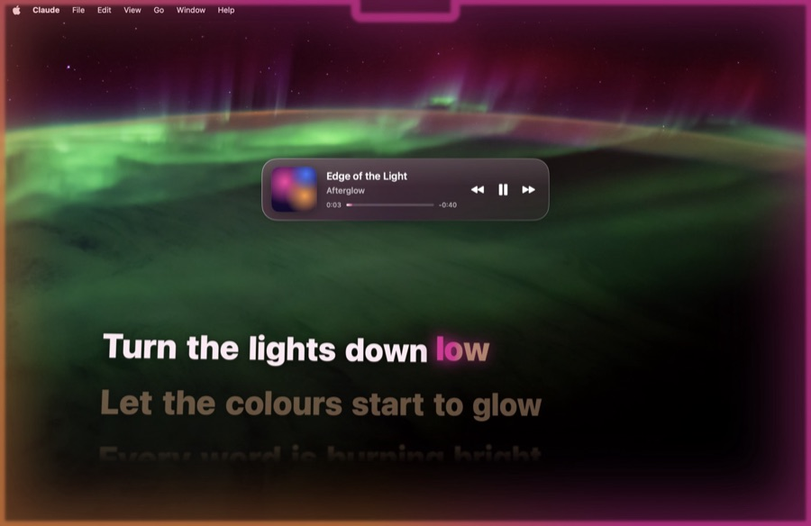

Aryen Palkar, built to measure
I study data science at UC San Diego and build LLM inference and machine learning systems, then measure what they cost and how fast they run. Every number on this page comes with a link to where it was measured.
Is self-hosting cheaper than an API at your traffic?
Read as 4 requests a second, about 345,600 a day.
- Self-hosted on one L40S
- $0.076 per 1,000 queries
- Cheapest published API
- $0.178 per 1,000 queries
Self-hosting is 2.4x cheaper. Below 1.70 requests a second the idle GPU costs more than the API.
Qwen3-8B as a 4-bit AWQ checkpoint on one RunPod L40S at $1.09 an hour, 1,024 tokens in and 128 out; one GPU sustains 7.62 requests a second. API price as of 6 Oct 2026. How it was measured
| Measure | BF16 | 4-bit AWQ |
|---|---|---|
| Time to first token | 165 ms | 107 ms |
| Inter-token latency | 28.8 ms | 10.3 ms |
| Sustained requests a second | 6.31 | 7.62 |
| Cost per 1,000 queries | $0.048 | $0.040 |
Prefix caching off, 10 warmup requests discarded per run. The recorder rejects any row missing its hardware, kernel, sampler or cache state.
Recall@5 over 150 questions
- Dense retrieval
- 0.700
- Hybrid BM25 and dense
- 0.693
No improvement: one question in 150. The null result stays in the README.
Inference platform
Qwen3-8B on vLLM behind a FastAPI gateway, with hybrid retrieval over PostgreSQL and pgvector and an evaluation suite that scores retrieval and answers. Serving 4-bit AWQ in place of BF16 cut time to first token from 165 ms to 107 ms. A CLI gate exits non-zero when recall@1 drops more than 0.01 below the recorded baseline.
| Decoder | M2 Pro | RTX 4090 |
|---|---|---|
| KV cache, 128 tokens | 19.6 | 106.6 |
| Speculative, best γ | 37.2 1.90x | 156.5 1.47x |
| KV cache, 512 tokens | 18.9 | 94.5 |
| Prompt lookup, no draft | 49.8 2.63x | 254.5 2.69x |
Median of 3 runs after a warmup, 64-token prompt, greedy. Every row has its full configuration under results/.
def rollback(self, n) -> None:
"""n: int for every row, or a (B,)
tensor of per-row counts."""
if not torch.is_tensor(n):
n = torch.full_like(self.lengths, int(n))
self.lengths = torch.clamp(
self.lengths - n.to(self.lengths.dtype),
min=0)spec-decode
GPT-2 decoding written from scratch to find out what speculative decoding actually buys: the forward pass, a KV cache with per-row rollback and the decoders, in about 600 lines. Hugging Face supplies only the weights and tokenizer. In fp32 the output is byte-identical to the large model decoding alone, and the two bugs the numbers caught are kept in the results.


Griddy
When the grid runs short, Griddy pauses or slows the AI jobs that can wait, keeps live services running, and asks a job's owner before pushing back a deadline. We built it as a team of four for the Microsoft Challenge at Cal Hacks 13; I ran the demo machine and built the runtime, integration, frontend and agent layer. Replaying Winter Storm Uri from EIA-930 records, the machine dropped from 28.2 W to 10.9 W when ERCOT declared EEA 3.


Runway
A study planner that reads Canvas, Google, iCloud and Outlook calendar feeds every 15 minutes, finds the exams and deadlines, and draws every day up to the last exam. Events its rules can't read go to Claude, which sees titles, times and places and nothing else. It drafts study blocks you accept, draws the time you actually studied beside the plan, and gives each exam a readiness score.


Afterglow
A macOS menu-bar app that lights the rim of the display in colors pulled from the album art, pulsing on every kick drum, and shows lyrics one word at a time, timed to the song, on the desktop or the lock screen. Five lyric styles, one of them under a Metal glass shader. Works with Spotify and Apple Music on Apple silicon.
| Problem | Reference | Mine | Rank |
|---|---|---|---|
| grayscale_v2 | 5.57 ms | 598 µs | 12 of 45 |
| vectorsum_v2 | 292 µs | 42.3 µs | 24 of 79 |
Final after six tuning batches. The first submissions, in Triton, ranked 34th and 67th.
__global__ void __launch_bounds__(THREADS)
gray_kernel(const float4* __restrict__ in4,
float4* __restrict__ out4, ...)
{
__shared__ float4 s[F4_PER_BLOCK];
...
o.x = fmaf(0.2989f, a.x,
fmaf(0.5870f, a.y, 0.1140f * a.z));GPU MODE kernels
CUDA kernels for GPU MODE's ranked leaderboards, run on their B200s. My early versions beat the PyTorch reference 9x and still ranked 34th, because the top 30 on grayscale already sit at the roofline. The README keeps that wrong framing next to what replaced it: measure against the board, not the reference.
About
- Studying
- Data Science, UC San Diego
- Graduating
- June 2028
- Based in
- San Diego
I study data science at UC San Diego's Halıcıoğlu Data Science Institute. With Engineers for Exploration I work on machine learning over satellite and drone imagery to estimate mangrove coverage in Baja California, on a team run with the Aburto Lab at Scripps Institution of Oceanography. I also founded Stealth, where I write Python trading algorithms on S&P 500 equities. I keep every measurement, including the ones that didn't help.
Record
- Engineers for Exploration, Student Researcher2026
- Stealth, Founder and Quantitative Developer2024
- PhotoRevive AI, CNN photo restoration, field-tested with the Sunnyvale Senior Center
- PlateWise AI, nutrition estimates from food photos
- 1st Place, De Anza Annual Hackathon, OpenAI-sponsored, 400+ competitors
- GPU MODE grayscale_v2, 12th of 452026
- GPU MODE vectorsum_v2, 24th of 792026
- Cal Hacks 13, Microsoft Challenge, with Griddy2026
Contact
- Aryen Palkar

- aryen.ronenpalkar
@gmail.com - github.com/AryenP
- San Diego, California
- UC San Diego, class of 2028
- Hello